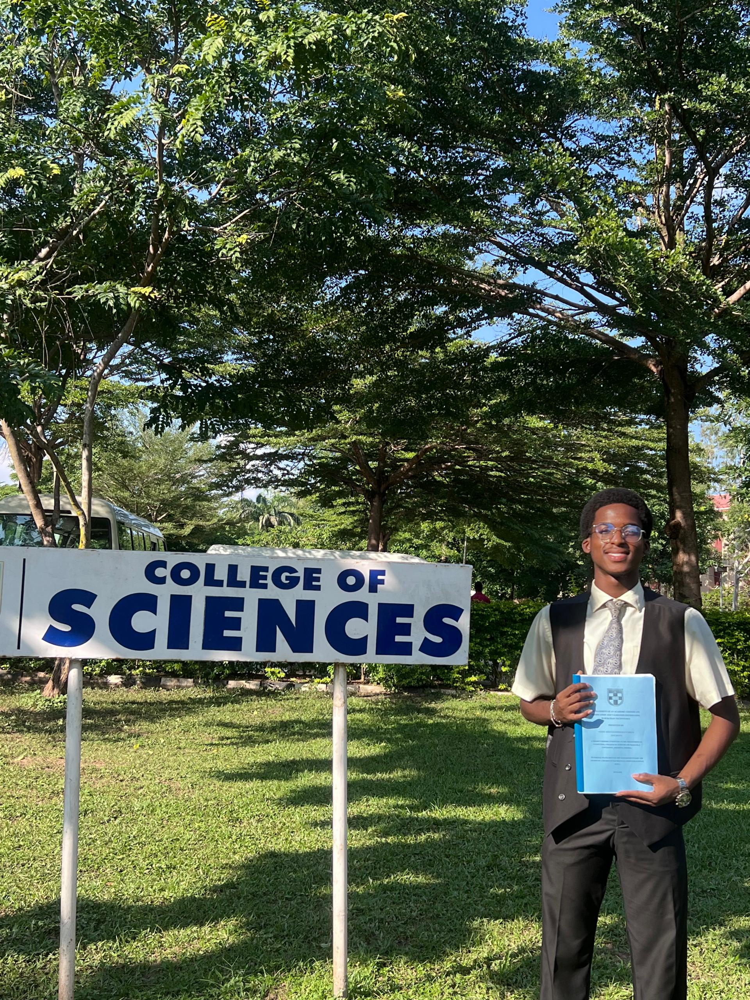

Yusuf Abdulhakeem

Summary
I am a fresh and hardworking computer science graduate committed to learning and improving my skills in order to employ those skills to a great advantage within the workforce. Actively seeking internships or junior employment roles.
Education
- First class Bachelors of Science, Computer Science - Afe Babalola University (2022-2025)
- Chrisland Pre Degree College (2021-2022)
- Rainbow College (2015-2021)
Work Experience
- IT Support Intern - Computer Warehouse Group (July 2023 - September 2023)
- Metering Intern - Computer Warehouse Group (July 2024 - September 2024)
- Restaurant Runner (July 2017 - August 2017)
Skills
- Programming & Web Development: HTML, CSS, JavaScript, Solidity
- Design Software: Adobe Illustrator, Adobe Animate, Dreamweaver
- Microsoft Suite: Microsoft Office, Microsoft Word, Microsoft Excel, Microsoft PowerPoint, Microsoft Teams
- Technical Support: Software Troubleshooting, Hardware Diagnostics, Computer Hardware Troubleshooting, Internet Troubleshooting
- Communication & Collaboration: Video Conferencing, Conference Organization, Public Speaking, Teamwork
- Other Skills: Project Management, Graphic Design, Rapid Learning, Troubleshooting